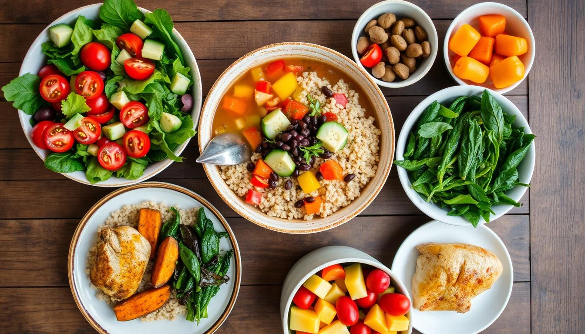

Por que é importante ter uma alimentação melhor e sustentável?
A alimentação sustentável é importante porque ajuda a preservar o
meio ambiente, a promover a saúde e a segurança alimentar.
Benefícios ambientais Reduz a emissão de gases de efeito estufa,
Protege as florestas, Preserva os recursos hídricos, Favorece a
sobrevivência de espécies ameaçadas, Promove a biodiversidade.
Benefícios à saúde Contribui para uma vida mais longa e saudável,
Evita mortes prematuras, Contribui para a segurança alimentar.
Problemas do Dia a Dia
Já comeu muito a ponto de sair do controle?
Você já se pegou louco para comer uma comida?
Como plantar pode te ajudar?
Como montar sua horta?
Como plantar pode te ajudar?
Melhores épocas para plantar vegetais?
NÃO CONSEGUE FAZER UMA DIETA SAUDÁVEL?
Muitas pessoas têm dificuldade em fazer uma dieta saudável por vários motivos, como falta de tempo, falta de dinheiro, hábitos alimentares e fatores emocionais. Algumas pessoas, ao tentar fazer uma dieta, acabam se restringindo excessivamente, focando apenas no peso e ignorando a saúde física. No entanto, na maioria das vezes, isso pode ser um reflexo de problemas mentais subjacentes que precisam ser tratados. Enquanto algumas pessoas conseguem jejuar por horas sem sentir fome, outras não conseguem ficar nem 30 minutos sem comer. Além disso, muitas pessoas consomem alimentos de baixo teor nutricional, o que pode prejudicar sua saúde a longo prazo. Para uma alimentação saudável a restrição não é considerada a melhor opção, porém a alimentação equilibrada é a solução
JÁ COMEU MUITO A PONTO DE SAIR DO CONTROLE?

A busca por comida pode ser influenciada por problemas emocionais, como ansiedade, tristeza e estresse. Por exemplo, quando estamos angustiados, podemos buscar comida como uma forma de aliviar nossos sentimentos, o que pode liberar dopamina e trazer uma sensação de bem-estar e prazer. No entanto, essa busca por comida pode se tornar um ciclo vicioso de compulsão alimentar. Quando tentamos restringir nossa alimentação para seguir uma dieta saudável, podemos nos sentir privados e aumentar a tentação de comer em excesso. Portanto, é fundamental encontrar um equilíbrio saudável na alimentação, sem nos restringir demais. Isso pode incluir praticar a mindfulness, desenvolver uma relação saudável com a comida e o corpo, e encontrar formas de gerenciar o estresse e a ansiedade que não envolvam a comida. Além disso, buscar apoio de profissionais de saúde pode ser fundamental para desenvolver um plano de alimentação saudável e equilibrado.
VOCÊ JÁ SE PEGOU LOUCO PARA COMER UMA COMIDA?

A busca por comida pode ser influenciada por problemas emocionais, como ansiedade, tristeza e estresse. Por exemplo, quando estamos angustiados, podemos buscar comida como uma forma de aliviar nossos sentimentos, o que pode liberar dopamina e trazer uma sensação de bem-estar e prazer. No entanto, essa busca por comida pode se tornar um ciclo vicioso de compulsão alimentar. Quando tentamos restringir nossa alimentação para seguir uma dieta saudável, podemos nos sentir privados e aumentar a tentação de comer em excesso. Portanto, é fundamental encontrar um equilíbrio saudável na alimentação, sem nos restringir demais. Isso pode incluir praticar a mindfulness, desenvolver uma relação saudável com a comida e o corpo, e encontrar formas de gerenciar o estresse e a ansiedade que não envolvam a comida. Além disso, buscar apoio de profissionais de saúde pode ser fundamental para desenvolver um plano de alimentação saudável e equilibrado.
IMC
O Índice de Massa Corporal (IMC) é usado pela Organização Mundial de Saúde (OMS), para determinar “peso ideal” e apontar níveis de magreza e obesidade dando mais precisão ao trabalho de profissionais de saúde e de educadores físicos. Para obter o IMC, basta dividir o seu peso (em quilos) pela altura (em metros) elevada ao quadrado (altura x altura). De acordo com o indicador, o peso considerado saudável é aquele situado entre:

Calculadora IMC
A classificação do índice de massa corporal (IMC) pode ajudar a identificar problemas de obesidade ou desnutrição, em crianças, adolescentes, adultos e idosos. Além de calcular o valor de IMC, esta calculadora também indica qual o intervalo de peso ideal que deve ter para garantir uma melhor qualidade de vida. Ter um peso dentro do intervalo de peso ideal ajuda ainda a evitar o aparecimento de várias doenças crônicas, como diabetes e hipertensão. Coloque os seus dados na calculadora e calcule o seu IMC:
anos
cm
kg
Beneficios Sociais
- Melhorar as relações: Alimentação saudável pode ajudar a melhorar as relações familiares e sociais.
- Aumentar a produtividade: Alimentação saudável pode ajudar a aumentar a produtividade no trabalho ou estudos.
- Reduzir custos: Alimentação saudável pode ajudar a reduzir custos com saúde e medicamentos.
Beneficios Físicos
- Prevenir doenças crônicas: Alimentação saudável ajuda a prevenir doenças como diabetes, hipertensão e doenças cardíacas.
- Manter peso saudável: Alimentação saudável ajuda a manter um peso saudável e reduzir o risco de obesidade.
- Fortalecer o sistema imunológico: Alimentação saudável fornece nutrientes essenciais para fortalecer o sistema imunológico.
- Melhorar a saúde mental: Alimentação saudável pode ajudar a reduzir o estresse e melhorar a saúde mental.
Beneficios Emocionais
- Aumentar a energia: Alimentação saudável fornece energia para realizar atividades diárias.
- Melhorar a concentração: Alimentação saudável ajuda a melhorar a concentração e produtividade.
- Reduzir o estresse: Alimentação saudável pode ajudar a reduzir o estresse e ansiedade.
- Melhorar a autoestima: Alimentação saudável pode ajudar a melhorar a autoestima e confiança.